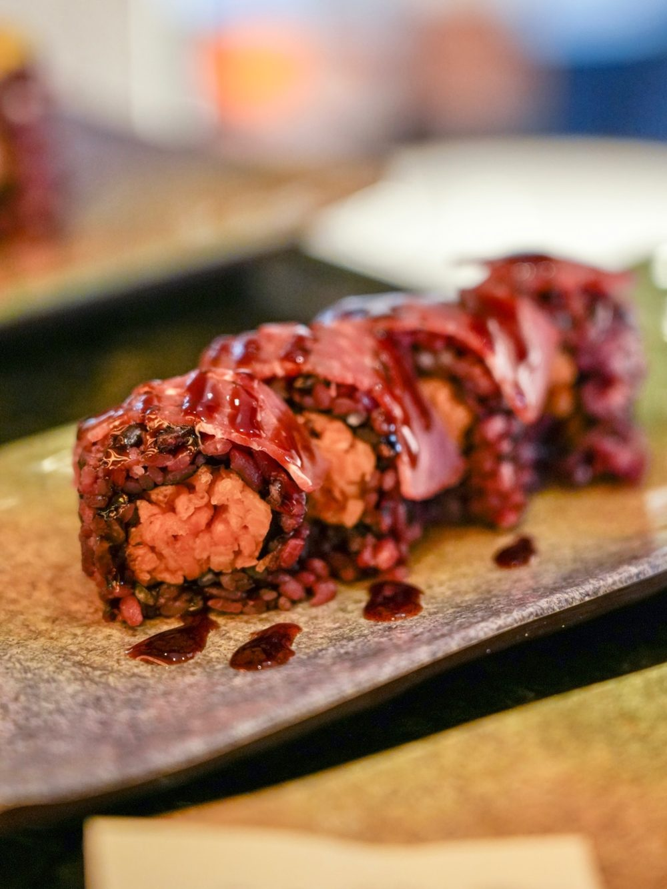

Home · Menu Alla Carta
Oltre 190 piatti: sushi, crudo, primi, wok e secondi. Tutti i prezzi alla carta del ristorante.
A Arachidi · B Crostacei · C Cereali con glutine · D Solfiti · E Latte · F Lupini · G Molluschi · H Frutta a guscio · I Pesce · J Sedano · K Senape · L Soia · M Uova · N Semi di sesamo · P Surgelato all'origine
I prodotti ittici destinati al consumo crudo sono sottoposti ad abbattimento preventivo. Per motivi di reperibilità alcuni prodotti possono essere congelati o surgelati. Informa il personale in caso di allergie o intolleranze.